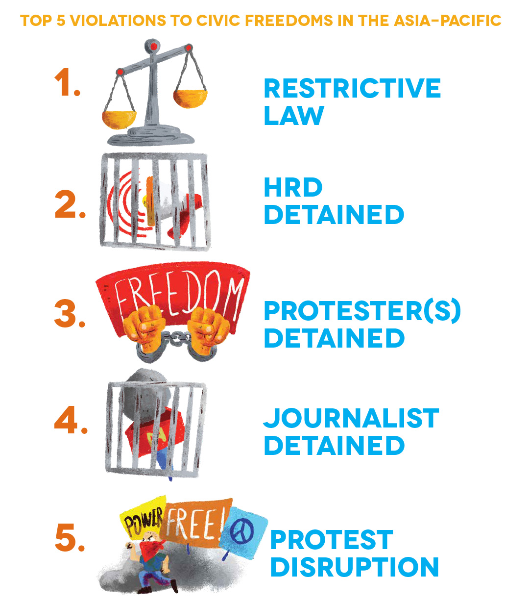
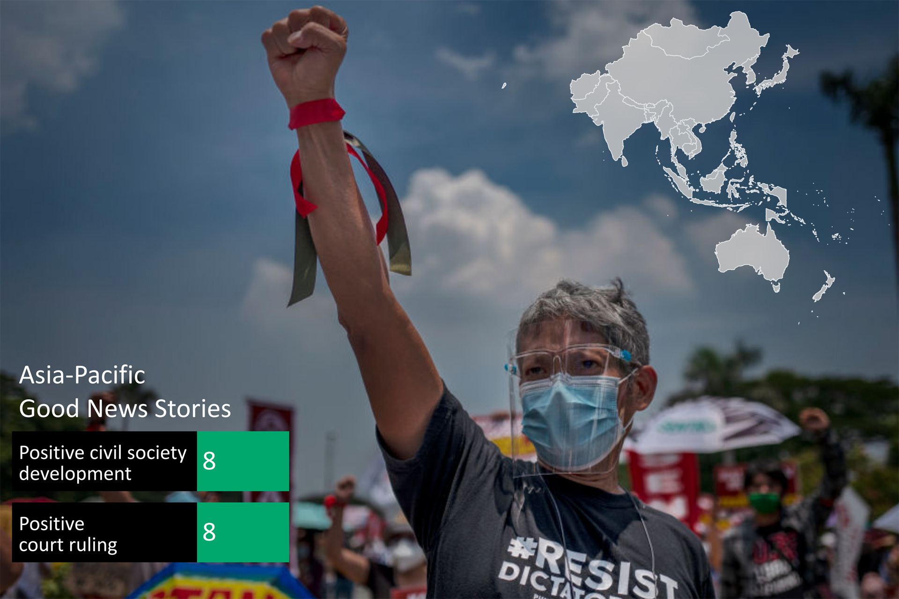

People Power Under Attack 2021 - Asia & Pacific
Asia & Pacific
Over the past year the CIVICUS Monitor has continued to document restrictions and attacks on civic freedoms across the Asia Pacific region, at times under the pretext of dealing with the pandemic. Our findings show that the use of restrictive laws to criminalise and prosecute HRDs continues to be one of the main violations recorded. Another widespread trend documented is the detention of protesters. Other frequently recorded violations include the harassment of activists, journalists and critics, cases of torture or ill-treatment and the detention of journalists.
Ratings Overview
This is reflected by CIVICUS Monitor ratings. Of the 26 countries and territories in the Asia region, four – China, Laos, North Korea and Vietnam – are rated as closed. Eleven are rated as repressed and seven as obstructed. Civic space in Japan, Mongolia and South Korea is rated narrowed, meaning that Taiwan remains the only country rated as open. In the Pacific, the story is more positive: seven countries are rated as open while four are rated as narrowed, including Australia, which was downgraded in 2019. Fiji, Nauru and Papua New Guinea remain in the obstructed category.
This year, Singapore has been downgraded from obstructed to repressed owing to its decline in fundamental freedoms. The Protection from Online Falsehoods and Manipulation Act 2019, which includes vague provisions and confers wide-ranging discretion on the government, continued to be used against government critics and independent media outlets. Journalists and bloggers faced defamation charges with exorbitant fines imposed. The 2017 Administration of Justice (Protection) Act, a vaguely worded contempt-of-court law, has been used to prosecute HRDs for criticism of the courts under the guise of protecting the judicial system. The government eroded the freedom of peaceful assembly by deploying the 2009 Public Order Act against activists who organised peaceful gatherings, including solo protesters. Civil society has raised concerns that a new Foreign Interference (Countermeasures) Act, passed in October 2021, will further curtail civic space, both online and offline.
In the Pacific, Solomon Islands has been downgraded from open to narrowed. In early 2021, the cabinet threatened to ban Facebook, a policy that was criticised by civil society groups and the opposition. The government also used pandemic-related emergency laws to impose strict restrictions on protests with harsh penalties. Media groups have raised concerns over the lack of information provided since the pandemic began.
More positively, Mongolia’s civic space rating has been upgraded from obstructed to narrowed. In April 2021, the Mongolian parliament adopted a new law for the protection of HRDs, making it the first country in Asia to provide a framework for their protection. The Law on the Legal Status of Human Rights Defenders is the result of a years-long collective effort of the Mongolian government, civil society and the United Nations (UN). Mongolia also saw improvement in its ranking in the 2021 World Press Freedom Index.
Civic Space Restrictions
Restrictive laws criminalise human rights defenders
The most widespread civic space violation documented in the Asia region in 2021 was the use of laws restricting the freedoms of association, peaceful assembly and expression, occurring in at least 21 countries. Among the legislation most often used to stifle dissent are laws related to national security and anti-terrorism, public order and criminal defamation. HRDs were detained under such laws in at least 19 countries and in 11 countries they were prosecuted.
In China, where civic space is closed, the government continued to detain scores of HRDs under broadly defined and vaguely worded offences such as ‘subverting state power’ and ‘picking quarrels and provoking trouble’. In Hong Kong, the draconian National Security Law has been weaponised to target dozens of democracy and opposition activists and journalists and has led to the closure of several civil society groups. Tong Ying-kit, who rode a motorcycle displaying a flag with a protest slogan, was jailed as the first person convicted under the law.
Over the year, the Vietnam government used an array of vaguely defined laws such as ‘anti-state propaganda’ and ‘abusing democratic freedoms’ to charge and jail activists and bloggers, some with long prison sentences. In Cambodia, ‘incitement’ laws were systematically used to target dozens of activists, such as prominent union leader Rong Chhun and environmental activists from the Mother Nature Cambodia group. In Indonesia, treason laws were deployed to criminalise pro-independence activists from Papua and Maluku, such as Victor Yeimo.
National security and anti-terror laws such as the repressive Unlawful Activities (Prevention) Act (UAPA) have been systematically abused in India by the government of Prime Minister Narendra Modi to keep dozens of HRDs in pre-trial detention on baseless charges and deny them bail. Those detained include several people linked to the Bhima Koregaon case, a 2018 celebration at which violence broke out, including human rights lawyer Sudha Bharadwaj. Jesuit priest and HRD Father Stan Swamy died while in detention under the UAPA in July 2021. The sedition law has also been used to target activists and journalists.
At least 13 countries in Asia have used criminal defamation laws to try to silence activists and critics in the past year. There has been an alarming rise in the use of the lèse-majesté (royal defamation) charges against pro-democracy activists in Thailand, where protesters have also been targeted by sedition laws. More than a hundred protesters have been charged with lèse-majesté since November 2020. In Malaysia, the Communications and Multimedia Act was deployed to target online critics of the royal family and politicians, as was an ‘anti-fake news’ ordinance issued under pandemic-related emergency rule in March 2021 that has since been lifted. In Indonesia, the Electronic Information and Transaction law was used to criminalise online dissent.
In Bangladesh, the draconian Digital Security Act (DSA) continued to be used against critical voices on social media, websites and other online platforms, particularly targeting journalists, bloggers, cartoonists, musicians, activists and students with punishments that can extend to life imprisonment. A human rights report in July 2021 found that more than 400 people were in prison under the DSA.
In the Pacific, restrictive laws were documented in at least seven countries. In Fiji, the Public Order (Amendment) Act 2014 prevented unions from protesting and targeted critics. New criminal defamation laws were passed in Tonga and Vanuatu. In Australia, civil society groups continued to raise concerns about the prosecution of whistle-blowers.
Crackdown on protests
Despite the global pandemic and restrictions, protests took place in at least 18 countries in the Asia region. Protesters were detained in at least 14 countries and the authorities used excessive force against protesters in at least 12 countries.
In Hong Kong, pro-democracy activists including Joshua Wong were convicted for their role in various peaceful protests and gatherings in 2019 and 2020, including protests against the country’s extradition law and a vigil commemorating the 1989 Tiananmen Square massacre.
In Myanmar, mass protests across the country by a civil disobedience movement following the February 2021 military coup were met with deadly violence by the ruling junta. Thousands have been arbitrarily arrested and detained and hundreds have been killed with impunity. In Thailand, pro-democracy leaders were detained and charged for their speeches during mass protests calling for reforms of the government and monarchy. Hundreds, including children, were investigated in connection with their protest activities. The Thai police also used excessive force, including live ammunition, against protesters.
In Indonesia, scores of activists protesting against the unilateral renewal of the Papua Special Autonomy Law in July and August 2021 were detained and met with excessive force. The law had long been rejected by many Papuans as failing to realise meaningful autonomy. In Malaysia, the authorities attempted to stifle a number of anti-government protests organised by the People’s Solidarity Secretariat – an ad hoc umbrella body of youth groups – including a candlelight vigil held in August 2021 for COVID-19 victims, where 31 were arbitrarily detained and ill-treated.
In India, the authorities vilified and repressed the farmers’ protest movement, which continued to hold protests until the government backed down and announced it would repeal controversial farming laws . Before the reversal, the authorities blocked roads to disrupt protests, arbitrarily detaining hundreds and using excessive force. Restrictions on peaceful assembly were also imposed in Indian-administered Jammu and Kashmir. In Sri Lanka, dozens of protesters including trade unionists and students were detained for protests organised since July 2021 against the militarisation of higher education and on labour rights and other issues. In Pakistan, Pashtun activists were detained and charged for their involvement in protests. Following the takeover of Afghanistan by the Taliban in August 2021, anti-Taliban protests were met with excessive force.
In the Pacific, protests were documented in seven countries. In Australia and New Zealand, scores of anti-lockdown protesters were detained in 2021 for violating COVID-19 regulations. In the Solomon Islands in August 2021, a march in Honiara to deliver a petition to the government by people from the Malaita province was disrupted and dispersed by the police.
Harassment and intimidation of activists and journalists
Governments used extra-legal tactics in at least 14 countries in the Asia region in the past year to attempt to harass or intimidate activists, journalists and critics into silence. China continued its unrelenting persecution of HRDs by putting some under surveillance and forcing others to leave town ahead of the ruling Chinese Communist Party's centenary celebration in July 2021. Activists were also barred from international travel or placed under ‘residential surveillance in a designated location’, a notorious form of state-enforced disappearance. In Hong Kong, media owner Jimmy Lai, founder of independent newspaper Apple Daily, is facing multiple charges. Six of the newspaper’s staff and executives were also arrested and the newspaper was forced to close.
In the Philippines, activists continued to be vilified and ‘red-tagged’ – labelled as communists or terrorists – in relation to their work. Human rights alliance Karapatan faced a spate of cyberattacks against its website traced to the Philippines intelligence services and army. Journalists in the Philippines continue to face harassment and spurious charges for their reporting, including Nobel Peace Prize-winner Maria Ressa. In Malaysia, activists criticising government policies or coordinating protests were hauled before the police for questioning and fined for breaching COVID-19 laws.
The Bangladeshi government launched smear campaigns and online attacks against journalists who are based abroad for criticising the government of Prime Minister Sheikh Hasina, and harassed family members who still live in Bangladesh. In Sri Lanka, a pattern emerged of intensified surveillance and harassment of civil society activists by a range of security services, including the Criminal Investigation Department, the Terrorist Investigation Division and State Intelligence officials, who subjected activists to intrusive questioning about their organisations, asking about administrative details, organisational activities, lists of staff, including their personal contact details, donors and funding sources. In Indian-administered Jammu and Kashmir, raids were conducted on the homes of HRDs and offices of CSOs and newspapers.
In the Pacific, harassment or intimidation of activists was documented in Fiji, Papua New Guinea and Samoa.
Torture and ill-treatment
Reports of torture and ill-treatment of activists were prevalent in Asia, occurring in at least 13 countries during the reporting period. In Myanmar, activists and protesters detained by the junta were allegedly tortured. In one case, more than 100 prisoners were crammed into a single room where it was difficult to move, had a gun pointed to their head during interrogations and were forced to eat from the concrete floor with hands cuffed behind their backs. Some were beaten and electrocuted.
In June 2021, the UN’s independent expert on human rights defenders raised concerns about activists in China being tortured, as well as being denied access to medical treatment, their lawyers and their families. In Vietnam, where over 200 political prisoners are locked up in a secretive network of prisons and detention centres, many have been held in prolonged periods of incommunicado detention and solitary confinement, inflicted with severe physical pain and suffering and had medical treatment withheld.
In Bangladesh, there have been widespread allegations of torture and ill-treatment by security forces. Writer Mushtaq Ahmed, who died in prison in February 2021, was allegedly subjected to severe abuse by the Rapid Action Battalion, an elite anti-terrorism unit, as was political cartoonist Kabir Kishore. Both were detained under the Digital Security Act. The International Truth and Justice Project released a report in September 2021 detailing incidents of torture by the Sri Lankan police and military against political prisoners.
In the Pacific, Papua New Guinean lawyer Laken Lepatu Aigilo was assaulted by the police in April 2021 and then kidnapped and threatened before he was detained. The incident occurred after he formally lodged a complaint of financial mismanagement against a politician.
Detention of journalists
In at least 12 countries in Asia in the past year, journalists were detained by the state for their critical reporting. In China, citizen journalist Zhang Zhan was sentenced to four years in jail for her reporting on the pandemic in Wuhan. In Vietnam, independent journalists have been detained and charged, including WHRD Pham Doan Trang and five journalists from the Báo Sạch (Clean Newspaper) Facebook-based news outlet. In Pakistan, journalists Amir Mir and Imran Shafqat were taken into custody in Lahore for their coverage of public institutions while senior journalist and columnist Waris Raza was abducted by the authorities from his house in Karachi in September 2021 and briefly detained. In Bangladesh, Rozina Islam, a senior reporter with the widely circulated national daily Prothom Alo, was detained for seven days in May 2021 and charged under the Official Secrets Act for exposing malpractices by the health ministry during the pandemic.
Positive developments

In a challenging year for fundamental freedoms, the CIVICUS Monitor documented a number of positive civic space developments in Asia and the Pacific, which are testament to the commitment of those who fought for them. The passage of the HRD protection law in Mongolia was a major victory for the county’s civil society, while in South Korea restrictive amendments to the media law were shelved following opposition from civil society and media groups. The campaign by activists to hold Philippine President Rodrigo Duterte accountable for his many human rights abuses achieved a landmark step when the International Criminal Court formally authorised an official probe into alleged crimes against humanity.
In response to cases lodged by several journalists and activists, India’s supreme court ordered an independent inquiry into whether the government used the Pegasus surveillance software to spy illegally on journalists, activists and political opponents. In Pakistan, despite intimidation and threats, thousands of women across the country took part in Aurat March (women’s march) events held in towns and cities to mark International Women’s Day. Bhutan’s parliament approved a bill to decriminalise same-sex relations, in a major victory for LGBTQI+ rights campaigners. In the Pacific, after strong civil society pressure, Tongan authorities moved swiftly to bring the perpetrator of the killing of LGBTQI+ rights activist Polikalepo ‘Poli’ Kefu to justice.
Countries of concern: Myanmar and Afghanistan
Myanmar saw a rapid decline in fundamental freedoms following the February 2021 coup, with the arrest, detention and criminalisation of hundreds of activists, including HRDs, trade unionists, journalists, political and student activists, doctors, poets, people from ethnic minorities, LGBTQI+ groups and artists. The junta used excessive force and firearms against protesters and disrupted the internet. Journalists were hunted down and dozens were arrested and charged. A number of political prisoners were allegedly tortured and ill-treated and there have been reports of sexual violence against women in detention centres. At the time of writing, according to the Assistance Association for Political Prisoners, 1,244 people had been killed and 7,122 people are currently in detention.
Another country of concern is Afghanistan, following the Taliban takeover in August 2021. There have been reports of activists facing systematic intimidation throughout the country. The Taliban are carrying out house-to-house searches for activists and journalists, particularly women, and interrogating them and their families. This has created a climate of significant fear and many have gone into hiding or have fled the country. The Taliban have also conducted raids on women-led CSOs across Afghanistan. Anti-Taliban protests, especially by women, in Kabul and other cities have been met with excessive force, gunfire and beatings to disperse crowds, leading to deaths and injuries of peaceful protesters. Journalists are at increased risk for covering the situation on the ground. Some covering the protests have been arbitrarily detained, tortured or ill-treated with impunity.